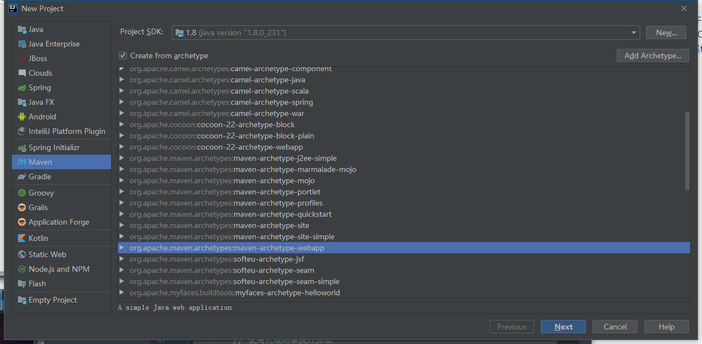
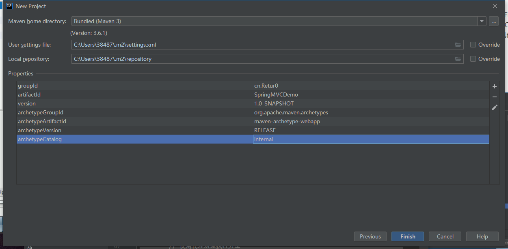
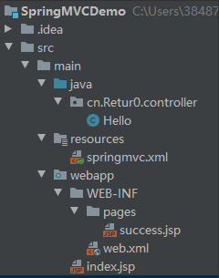
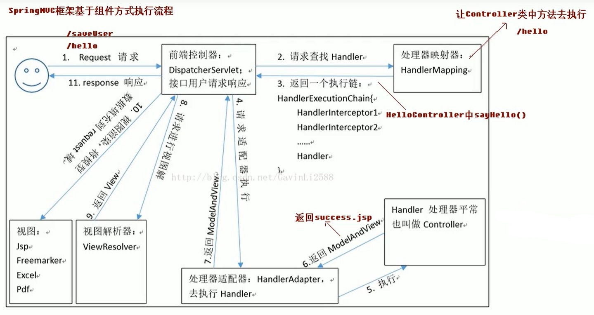

1 SpringMVC M – model，模型。JavaBean。
V – View，JSP。JSP，HTML。
C – Controller，控制器。Servlet。
1.1 简介 SpringMVC 是一种基于 java，实现了 MVC 设计模型的请求驱动型轻量级 Web 框架，属于 Spring FrameWork 的后续产品，已经融合在 Spring Web Flow 里面。Spring框架提供了构建 Web应用程序的全功能 MVC 模块。使用 Spring 可插入的 MVC 架构，从而在使用 Spring 进行 Web 开发时，可以使用 SpringMVC 来代替其他 MVC 开发框架，如Struts2。
1.2 入门程序 创建一个 Maven 项目，选择webapp。注意是 maven 的 webapp，不是 cocoon 的webapp。

在创建时添加下面这个键值对可以让创建变快：

Maven 的 pom.xml 中添加以下依赖：
1 2 3 4 5 6 7 8 9 10 11 12 13 14 15 16 17 18 19 20 21 22 23 24 25 26 27 28 29 30 31 32 33 34 35 36 37 38 39 40 <properties > <project.build.sourceEncoding > UTF-8</project.build.sourceEncoding > <maven.compiler.source > 1.8</maven.compiler.source > <maven.compiler.target > 1.8</maven.compiler.target > <spring.version > 5.2.3.RELEASE</spring.version > </properties > <dependencies > <dependency > <groupId > org.springframework</groupId > <artifactId > spring-context</artifactId > <version > ${spring.version}</version > </dependency > <dependency > <groupId > org.springframework</groupId > <artifactId > spring-web</artifactId > <version > ${spring.version}</version > </dependency > <dependency > <groupId > org.springframework</groupId > <artifactId > spring-webmvc</artifactId > <version > ${spring.version}</version > </dependency > <dependency > <groupId > javax.servlet</groupId > <artifactId > servlet-api</artifactId > <version > 2.5</version > <scope > provided</scope > </dependency > <dependency > <groupId > javax.servlet.jsp</groupId > <artifactId > jsp-api</artifactId > <version > 2.0</version > <scope > provided</scope > </dependency > </dependencies >
web.xml
1 2 3 4 5 6 7 8 9 10 11 12 13 14 15 16 17 18 19 20 21 22 23 <!DOCTYPE web-app PUBLIC "-//Sun Microsystems, Inc.//DTD Web Application 2.3//EN" "http://java.sun.com/dtd/web-app_2_3.dtd" > <web-app > <display-name > Archetype Created Web Application</display-name > <servlet > <servlet-name > dispatcherServlet</servlet-name > <servlet-class > org.springframework.web.servlet.DispatcherServlet</servlet-class > <init-param > <param-name > contextConfigLocation</param-name > <param-value > classpath:springmvc.xml</param-value > </init-param > <load-on-startup > 1</load-on-startup > </servlet > <servlet-mapping > <servlet-name > dispatcherServlet</servlet-name > <url-pattern > /</url-pattern > </servlet-mapping > </web-app >
springmvc.xml
1 2 3 4 5 6 7 8 9 10 11 12 13 14 15 16 17 18 19 20 21 22 23 <?xml version="1.0" encoding="UTF-8"?> <beans xmlns ="http://www.springframework.org/schema/beans" xmlns:xsi ="http://www.w3.org/2001/XMLSchema-instance" xmlns:context ="http://www.springframework.org/schema/context" xmlns:mvc ="http://www.springframework.org/schema/mvc" xsi:schemaLocation ="http://www.springframework.org/schema/beans http://www.springframework.org/schema/beans/spring-beans.xsd http://www.springframework.org/schema/context http://www.springframework.org/schema/context/spring-context.xsd http://www.springframework.org/schema/mvc http://www.springframework.org/schema/mvc/spring-mvc.xsd" > <context:component-scan base-package ="cn.Retur0" /> <bean id ="internalResourceViewResolver" class ="org.springframework.web.servlet.view.InternalResourceViewResolver" > <property name ="prefix" value ="/WEB-INF/pages/" /> <property name ="suffix" value =".jsp" /> </bean > <mvc:annotation-driven /> </beans >
index.jsp
1 2 3 4 5 6 7 8 9 10 <%@ page contentType ="text/html;charset=UTF-8" language ="java" %> <html > <head > <title > Title</title > </head > <body > <h3 > 入门程序</h3 > <a href ="hello" > 进入</a > </body > </html >
success.jsp
1 2 3 4 5 6 7 8 9 10 <%@ page contentType ="text/html;charset=UTF-8" language ="java" %> <html > <head > <meta charset ="UTF-8" > <title > 成功页面</title > </head > <body > 成功 </body > </html >
Hello.java
1 2 3 4 5 6 7 8 @Controller public class Hello @RequestMapping (path="/hello" ) public String sayHello () System.out.println("Hello,springMVC" ); return "success" ; } }
项目结构如下：

1.3 总结一下流程
启动服务器，加载配置文件。
加载 web.xml，DispatcherServlet 对象被创建。
在创建 DispatcherServlet 对象时，参数加载 springmvc.xml。
springmvc.xml 中配置的开启注解扫描，会让配置注解的 Hello 类和方法实例化（默认单例）为对象，加载到 IoC 容器中。
加载视图解析器对象，它可以帮我们完成页面跳转的功能。
发送请求，后台处理请求。
SpringMVC 框架是基于组件方式执行流程。

DispatcherServlet：前端控制器
用户请求到达前端控制器，它相当于 MVC 模式中的 C，是整个控制流程的中心，由它调用其他组件处理用户的请求，它的存在降低了组件之间的耦合性。
HandlerMapping：处理器映射器
HandlerMapping 负责根据用户请求 找到 Handler 即处理器，SpringMVC 提供了不同映射器是先不用的映射方式，例如：配置文件方式，实现接口方式，注解方式。
Handler：处理器
开发中需要编写的具体业务控制器。控制器将用户请求转发到处理器。由处理器对具体的用户请求进行处理。
HandlerAdapter：处理器适配器
通过 HandlerAdapter 对处理器进行执行，这个是是配置模式的应用。通过扩展适配器可以对更多类型的处理器进行执行。
ViewResolver：视图解析器
负责处理结果生成的 View 视图，它首先根据逻辑视图明解析成物理视图名即具体的页面地址，在生成 View 视图对象，最后对 View 进行渲染将处理结果通过页面展示给客户。
View：视图
SpringMVC 框架提供了很多的 View 试图类型的支持，包括：jstlVIew、freemarkerView、pdfView。一般情况下需要通过页面标签或页面模板技术讲模型数据通过页面展示给用户需要由程序员根据业务需求开发具体的页面。
1.4 RequestMapping 注解 用于建立请求 URL 和处理请求方法之间的对应关系。
这个注解不仅可以放到方法上，也可以放到类上。放到类上的路径为一级目录。请求时需要/一级/二级。有利于模块化开发。
属性：对访问进行一些限制。
path/value：可以互换。意义相同。如果只有一个属性的话，也可以不写属性名。
@RequestMapping("/testResquestMapping")
method：规定这个方法可以被什么请求方式请求到。它可以的取值是一个枚举类。
@RequestMapping(value="/testResquestMapping", method={RequestMethod.POST})
params：限定在请求时必须要同时传递的参数。它的取值是一个字符串数组。
@RequestMapping(value="/testResquestMapping", params={"username=name","password"})
在超链接的href末尾需要加 ? 跟两个参数，多个参数用 & 连接。参数的名称和值都必须和注解中定义的一样。
headers：发送的请求中必须包括的请求头。
2 请求参数的绑定 2.1 说明 表单提交的数据都是 k=v 格式的。SpringMVC的参数绑定是把表单提交的请求参数，作为控制器中方法的参数进行绑定的。要求提交表单的 name 和参数的名称是相同的。
如果方法的参数名和请求的参数名相同，框架自动把参数传入方法。
底层通过反射来实现。
支持的数据类型：
基本数据类型和字符串类型。
提交表单的 name 和参数的名称是相同的。并且区分大小写。
实体类型（JavaBean）。
提交表单的 name 和 JavaBean 中的属性名称需要一致。
如果一个 JavaBean 类中包含其他的引用类型，那么表单的 name 属性需要编写成对象.属性。
集合类型。页面上的编写方式：list[0].属性
1 2 3 4 5 6 7 8 9 10 11 12 13 14 15 16 17 18 19 20 21 22 23 24 25 26 27 28 29 30 31 32 33 <body > 提交参数： <a href ="paramBinding?name=name01&password=123456" > 发送参数</a > <br > <br > 提交JavaBean对象：把数据封装到Account类中 <form action ="beanParamBinding" method ="post" > 账户名称：<input type ="text" name ="username" /> <br > 密码：<input type ="text" name ="password" /> <br > 金额：<input type ="text" name ="money" /> <br > 姓名：<input type ="text" name ="User.name" /> <br > 年龄：<input type ="text" name ="User.age" /> <br > <input type ="submit" value ="发送JavaBean参数" /> <br > </form > <br > 提交集合类型：把数据封装到Account类中，类中有list和map集合 <form action ="beanParamBinding" method ="post" > 账户名称：<input type ="text" name ="username" /> <br > 密码：<input type ="text" name ="password" /> <br > 金额：<input type ="text" name ="money" /> <br > 传入user的数据<br > 姓名：<input type ="text" name ="User.name" /> <br > 年龄：<input type ="text" name ="User.age" /> <br > 传入list的数据<br > 姓名：<input type ="text" name ="list[0].name" /> <br > 年龄：<input type ="text" name ="list[0].age" /> <br > 传入map的数据<br > 姓名：<input type ="text" name ="map['one'].name" /> <br > 年龄：<input type ="text" name ="map['one'].age" /> <br > <input type ="submit" value ="提交集合类型" /> <br > </form > </body >
1 2 3 4 5 6 7 8 9 10 11 @RequestMapping (path="/paramBinding" )public String paramBinding (String name, String password) System.out.println(name + "______" + password); return "success" ; } @RequestMapping ("/beanParamBinding" )public String beanParamBinding (Account acc) System.out.println(acc); return "success" ; }
2.2 中文乱码问题 传统解决方法是request.setChar。SpringMVC已经封装了这个方法，通过过滤器对请求中的中文字符进行转码。
在 web.xml 中配置过滤器。(过滤器可能要写在 Servlet 上面)
1 2 3 4 5 6 7 8 9 <filter > <filter-name > characterEncodingFilter</filter-name > <filter-class > org.springframework.web.filter.CharacterEncodingFilter</filter-class > </filter > <filter-mapping > <filter-name > characterEncodingFilter</filter-name > <url-pattern > /*</url-pattern > </filter-mapping >
2.3 自定义类型转换器 涉及到一些类型如日期时，网页提交字符串的格式很可能不是能被Date识别的格式，这时候就需要类型转换器来解决这个问题。
通过实现 Converter 接口来自定义数据类型转换器。
Converter<S, T>：S->source数据源，T->target目标。
1 2 3 4 5 6 7 8 9 10 public calss stringToDateConverter implements Converter<String,Date>{ public Date convert (String source) DataFormat df = new SimpleDateFormat("yyyy-MM-dd" ); try { return df.parse(source); } catch (Exception e){ throw new RuntimeException("数据类型转换出现错误" ); } } }
在 SpringMVC 中添加配置：
1 2 3 4 5 6 7 8 9 <bean id ="conversionServcieFactoryBean" class ="ConversionServcieFactoryBean" > <property name ="converters" > <set > <bean class ="cn.Retur0.utils.StringToDateConverter" /> </set > </property > </bean > <mvc:annotation-driven conversion-service ="conversionServcieFactoryBean" />
3 获取原生 Servlet API 在方法的参数部分添加 request 和 response。
1 2 3 4 5 6 7 @RequestMapping ("/testServlet" )public String testServlet (HttpServletRequest request, HttpServletResponse) System.out.println(request); System.out.println(response); HttpSession session = request.getSession(); ServletContext servletContext = session.getServletContext(); }